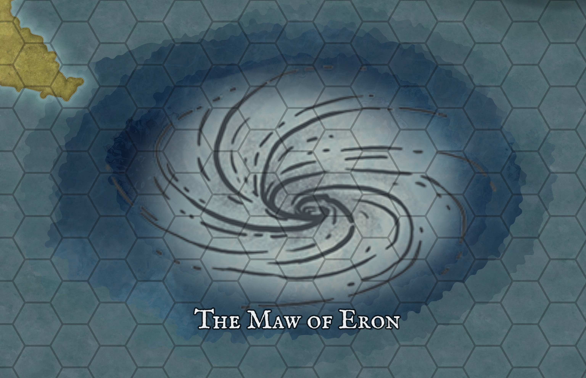

The Maw of Eron Pag is a vast rift where the earth seems to collapse inward, its jagged edges glowing faintly as if lit from within. Travelers speak of a hollow roar rising from its depths, a sound like the world itself being devoured.
Geological Map of the Maw of Eron
